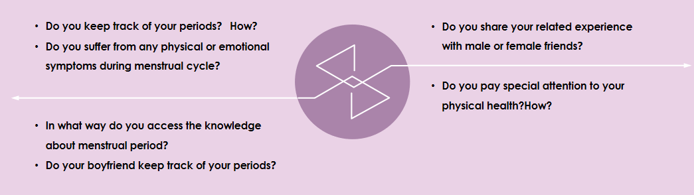
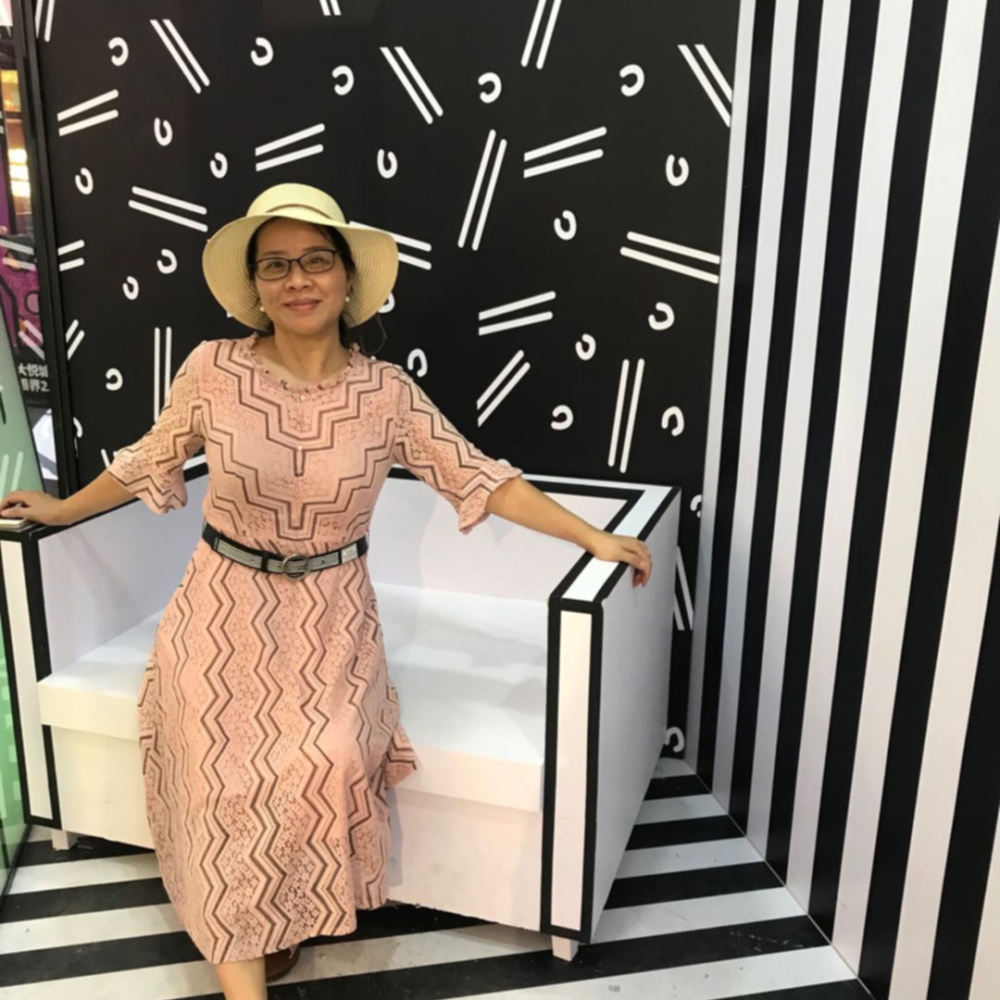

Part 2: Semi-structured Interview
To deepen my horizon on the problem and understand hidden pain points, I conducted online video
interviews with 4 people in my network. I wondered how their different lifestyles and roles affect their
behaviors.


Rong
mother of a teenager
THEY ARE TOO PROACTIVE
Many period tracking apps require constant thinking about time tracking as a task, a boring task without
any feedback. Open the app, click to start the cycle, open the app again, click to end the cycle. These
apps are compete with things that are more important in peoples lives, rather than delight people. So
they lose.
DISCUSSING MY PERIOD WITH OTHERS
MAKES ME UNCOMFORTABLE
Commonly, people feel awkward when talking personal stories to others.
Personal boundary lacked when people seek for help from acquaintances on some embarrassing symptoms or
personal behaviors.
In contrast, people tend to speak out freely to strangers online.
A person will be more candid when nobody knows who you are and you can say anything without fear.
IT HAS NO
DIFFERENT WITH ADDING EVENTS
ON AN ORDINARY CALENDAR
People become more willing to uninstall an app and keep trying new ones than before.
Don't expect too much patience from users.
What our users need are period analysis & prediction and personal advice generated from period
recording.
Simply ask users to report daily matters are meaningless.
People want a period assistant rather than a tracker.
I KNOW THEY ARE HELPFUL,
BUT ... TOO PROLIX, TOO BORING.
The defining characteristic of the modern reader is impatience.
Healthcare videos and articles are helpful,
but no one want spend much time on one-hour health care courses after busy work..